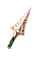
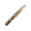
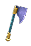
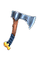
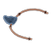
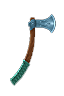
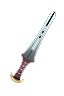
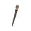
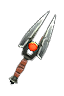

Filters:
Acid Shards

68 - 72 Damage
10% Pierce Ratio
Speed: Fast
60 Burn Damage over 3.0 Seconds
+15% Burn Damage
60 Poison Damage over 3.0 Seconds
+15% Instant Poison Damage
+15% Poison Damage
25 Instant Poison Damage
+20% Damage to Undead
Grants Skill : Meltdown
LVL 42, STR 211, DEX 280
Aimon-syd

180 - 202 Damage
15% Pierce Ratio
Speed: Fast
Set : Embodiment of Corruption
Chance for one of the following:
260 Burn Damage over 2.0 Seconds
260 Poison Damage over 2.0 Seconds
50 Piercing Damage
75 Fire Damage
75 Instant Poison Damage
350 Reduced Armor for 2.0 Seconds
45% Slowed for 2.0 Seconds
+30% Attack Speed
LVL 70, STR 260, DEX 510
Amazigh Knife
40 - 45 Damage
10% Pierce Ratio
Speed: Fast
44 Piercing Damage
+20% Attack Speed
+20% Damage to Beastmen
+20% Less Damage from Beastmen
+1 to all skills in Archery Mastery
Grants Skill : Volley
LVL 27, STR 81, DEX 252
Anathema

110 Damage
110 Vitality Damage
Speed: Average
360 Electrical Burn over 4.0 Seconds
+35% Vitality Damage
+35% Vitality Decay
10.0% Chance of +125% Life Leech
40% Energy Leech Resistance
+40 Intelligence
40% Absorption of Spell Energy
Grants Skill : Unholy Tempest (Activated on attack)
Blackened winds seep deep inside the bodies and souls of those who inhale them, damaging spiritual and earthly structures of their beings.
30.0 Second(s) Recharge
6.0 Second Duration
8.0 Meter Radius
160 Electrical Burn Damage per Second
160 Vitality Decay per Second
40% Reduced Resistances for 3.0 Seconds
+50% Damage to Ghosts
LVL 57, STR 274, DEX 370
Antediluvian Dart
45 - 50 Damage
25% Pierce Ratio
Speed: Average
Difficulty: Normal
+10% Damage to Humans
+10% Damage to Beasts
+10% Damage to Beastmen
+2 to Split Shots
Grants Skill : Scattershot
LVL 28, STR 159, DEX 205
Antediluvian Dart
99 - 110 Damage
25% Pierce Ratio
Speed: Average
Difficulty: Epic
+15% Damage to Humans
+15% Damage to Beasts
+15% Damage to Beastmen
+4 to Split Shots
Grants Skill : Scattershot
LVL 42, STR 243, DEX 325
Antediluvian Dart
168 - 187 Damage
25% Pierce Ratio
Speed: Average
Difficulty: Legendary
+20% Damage to Humans
+20% Damage to Beasts
+20% Damage to Beastmen
+6 to Split Shots
Grants Skill : Scattershot
LVL 52, STR 299, DEX 405
Arcanite Reapers
82 - 94 Damage
Speed: Average
+10% Total Damage
20.0% Chance of 180 Frostburn Damage over 3.0 Seconds
45 Cold Damage
20.0% Chance of 3.0 second(s) of Skill Disruption
20% Cold Resistance
20% Lightning Resistance
20% Energy Leech Resistance
20% Reduced Freeze Duration
20% Slow Resistance
+12% Energy
+4 to Split Shots
Grants Skill : Split Shots
LVL 42, STR 103, DEX 381
Backstabber

24 - 27 Damage
10% Pierce Ratio
Speed: Fast
15 Bleeding Damage per Second
8% Reduction to Enemy's Health
+15% Attack Speed
+1 to Target Practice
+1 to all skills in Archery Mastery
LVL 15, STR 113, DEX 140
Blessing of the Moirae
168 - 178 Damage
10% Pierce Ratio
Speed: Fast
+20% Elemental Damages
167 - 178 Elemental Damages
33% Elemental Resistance
+6% Total Speed
33% Weapon Base Damage becomes Elemental
-10% Recharge
+10% Less Damage from Magical
+2 to all skills in Witchcraft Mastery
+1 to all skills in Lifegiving Mastery
LVL 59, STR 306, DEX 415
Blood Blossoms
46 - 49 Damage
10% Pierce Ratio
Speed: Fast
+25% Physical Damage
66 - 120 Bleeding Damage over 3.0 Seconds
25.0% Chance of +100% Bleeding Damage
10.0% Chance of 50% Reduction to Enemy's Health
10% Chance to Dodge Attacks
10% Chance to Avoid Projectiles
+3 to Hemorrhage
LVL 25, STR 138, DEX 175
Blue Dragon's Scales
42 - 45 Damage
10% Pierce Ratio
Speed: Fast
63 - 66 Frostburn Damage over 3.0 Seconds
45 - 75 Energy Leech over 3.0 Seconds
+220 Energy
5% Chance to Dodge Attacks
5% Chance to Avoid Projectiles
-10% Recharge
-10% Energy Cost
LVL 22, STR 131, DEX 165
Chakram of the Lawless
97 - 103 Damage
10% Pierce Ratio
Speed: Fast
+40% Physical Damage
20% Chance for one of the following:
2.0 second(s) of Stun
1.0 second(s) of Confusion
10% Physical Resistance
100% Reduced Entrapment Duration
-20% Reduced Freeze Duration
+120 Defensive Ability
+10% Total Speed
+10% Attack Speed
+10% Increased Experience
+25% Damage to Beastmen
+2 to Ferocity
+2 to all skills in Barbarism Mastery
LVL 47, STR 222, DEX 295
Chakram of the Moon
146 - 156 Damage
10% Pierce Ratio
146 - 156 Cold Damage
Speed: Fast
Set : Sun & Moon
+30% Cold Damage
+30% Frostburn Damage
5% of Attack damage converted to Health
5.0% Chance of 3.0 second(s) of Freeze
50% Fire Resistance
+10% Intelligence
+300 Energy
+20% Attack Speed
-15% Recharge
+20% Damage to Demons
+10% Less Damage from Demons
+2 to all skills in Aqua Mastery
LVL 55, STR 285, DEX 385
Chakram of the Sun
146 - 156 Damage
10% Pierce Ratio
146 - 156 Fire Damage
Speed: Fast
Set : Sun & Moon
+30% Fire Damage
+30% Burn Damage
5% of Attack damage converted to Health
5.0% Chance of 3.0 second(s) of Petrify
50% Cold Resistance
+10% Strength
+300 Health
+20% Attack Speed
-15% Recharge
+20% Damage to Beastmen
+10% Less Damage from Beastmen
+2 to all skills in Lifegiving Mastery
LVL 55, STR 285, DEX 385
Daggertooth

160 - 175 Damage
20% Pierce Ratio
Speed: Fast
70 Piercing Damage
+10% Total Speed
+25% Attack Speed
10% Chance to Dodge Attacks
Grants Skill : Daggertooth (Activated on attack)
Each dagger you throw can split upon impact and ricochet to other targets.
1 Projectile(s)
1 - 4 Fragments
100% Chance to pass through Enemies
LVL 50, STR 159, DEX 478
Darkfang

68 - 76 Damage
25% Pierce Ratio
Speed: Fast
Difficulty : Epic
+12% Dexterity
+12% Total Speed
Grants Skill: Sand Veil (Activated upon taking damage)
Fine earthly matter and dust quickly gather around you, forming a rotating sphere which pierces through enemy flesh, and makes it more probable for attacks to miss you.
24.0 Second(s) Recharge
24 Energy Cost
8.0 Second Duration
3.5 Meter Radius
80 Piercing Damage
3% Reduction to Enemy's Health
15% of Attack damage converted to Health
15% Chance to Dodge Attacks
15% Chance to Avoid Projectiles
LVL 43, STR 222, DEX 295
Darkfang
142 - 158 Damage
25% Pierce Ratio
Speed: Fast
Difficulty : Legendary
+15% Dexterity
+15% Total Speed
Grants Skill: Sand Veil (Activated upon taking damage)
Fine earthly matter and dust quickly gather around you, forming a rotating sphere which pierces through enemy flesh, and makes it more probable for attacks to miss you.
24.0 Second(s) Recharge
40 Energy Cost
8.0 Second Duration
3.5 Meter Radius
120 Piercing Damage
4% Reduction to Enemy's Health
15% of Attack damage converted to Health
25% Chance to Dodge Attacks
25% Chance to Avoid Projectiles
LVL 54, STR 264, DEX 355
Dea
137 - 141 Damage
10% Pierce Ratio
Speed: Fast
Set : Latis
190 Vitality Decay over 3.0 Seconds
25.0% Chance of 75 Life Leech over 3.0 Seconds
+50% Life Leech
5% Reduction to Enemy's Health
+2 to Skewer
+2 to Reaper's Avatar
+1 to all skills in Necromancy Mastery
Grants Skill : Health Recovery (Activated on attack)
Every attack recovers a bit of your missing health.
80 Health Restored
LVL 46, STR 243, DEX 325
Death's Wings
38 - 40 Damage
10% Pierce Ratio
Speed: Fast
33.0% Chance of 27 Piercing Damage
10% Reduction to Enemy's Health
20 Reduced Damage for 3.0 Seconds
20% Reduced Resistances for 3.0 Seconds
20% Slowed for 3.0 Seconds
Grants Skill : Consume Life (Activated on low health)
Filled with rage, your brutal attacks sap out vitality upon striking.
5.0 Second Duration
19 Energy Leech per Second
37 Vitality Damage
LVL 20, STR 124, DEX 155
Deus
137 - 141 Damage
10% Pierce Ratio
Speed: Fast
Set : Latis
190 Frostburn Damage over 3.0 Seconds
25.0% Chance of 75 Energy Leech over 3.0 Seconds
+50% Energy Leech
5% Energy Drain (50% of lost Energy as Damage)
+2 to Carve Reality
+2 to Celestial Quintessence
+1 to all skills in Time Mastery
Grants Skill : Mana Recovery (Activated on attack)
Every attack recovers a bit of your missing mana.
15 Energy Restored
LVL 46, STR 243, DEX 325
Drowned Sailor

137 - 146 Damage
15% Pierce Ratio
Speed: Fast
+10% Total Damage
270 - 300 Vitality Decay over 3.0 Seconds
150 - 180 Life Leech over 3.0 Seconds
123 Cold Damage
10.0% Chance of 28 Reduced Resistances for 3.0 Seconds
60% Bleeding Resistance
60% Cold Resistance
+42 Intelligence
+10% Energy
+1 to all skills in Aqua Mastery
+1 to all skills in Necromancy Mastery
LVL 56, STR 288, DEX 390
Dune Raider Knives

26 - 29 Damage
30% Pierce Ratio
Speed: Very Fast
Difficulty: Normal
45 Bleeding Damage over 3.0 Seconds
15 Cold Damage
6% of Attack damage converted to Health
+1 to Languid Death
LVL 14, STR 124, DEX 155
Dune Raider Knives
68 - 76 Damage
30% Pierce Ratio
Speed: Very Fast
Difficulty: Epic
120 Bleeding Damage over 3.0 Seconds
40 Cold Damage
8% of Attack damage converted to Health
+2 to Languid Death
LVL 37, STR 187, DEX 245
Dune Raider Knives
142 - 158 Damage
30% Pierce Ratio
Speed: Very Fast
Difficulty: Legendary
240 Bleeding Damage over 3.0 Seconds
60 Cold Damage
10% of Attack damage converted to Health
+3 to Languid Death
LVL 48, STR 243, DEX 325
Dvergr Runestones
20 Fire Damage
Speed: Average
Difficulty: Normal
-12% Recharge
+30% Damage to Devices
+30% Damage to Constructs
+2 to Elemental Dominion
LVL 34, STR 1, DEX 1, DEX 305
Dvergr Runestones
40 Fire Damage
Speed: Average
Difficulty: Epic
-18% Recharge
+30% Damage to Devices
+30% Damage to Constructs
+4 to Elemental Dominion
LVL 46, STR 1, DEX 1, DEX 458
Dvergr Runestones
60 Fire Damage
Speed: Average
Difficulty: Legendary
-24% Recharge
+30% Damage to Devices
+30% Damage to Constructs
+6 to Elemental Dominion
LVL 56, STR 1, DEX 1, DEX 572
Dwarfbiter
120 - 128 Damage
10% Pierce Ratio
Speed: Fast
+40% Physical Damage
111 - 129 Poison Damage over 3.0 Seconds
+40% Poison Damage with +200% Improved Duration
+40 Dexterity
+20% Attack Speed
+2 to Poison Weapons
+1 to all skills in Science Mastery
LVL 51, STR 260, DEX 350
Dysnomia
45 - 50 Damage
15% Pierce Ratio
Speed: Fast
Difficulty: Normal
40 Vitality Decay over 2.0 Seconds
25 Vitality Damage
+1 to all skills in Chaos Mastery
LVL 28, STR 152, DEX 195
Dysnomia
99 - 110 Damage
15% Pierce Ratio
Speed: Fast
Difficulty: Epic
80 Vitality Decay over 2.0 Seconds
55 Vitality Damage
+1 to all skills in Chaos Mastery
LVL 42, STR 211, DEX 280
Dysnomia
169 - 187 Damage
15% Pierce Ratio
Speed: Fast
Difficulty: Legendary
160 Vitality Decay over 2.0 Seconds
90 Vitality Damage
+2 to all skills in Chaos Mastery
LVL 52, STR 260, DEX 350
Echoe of Tartarus

114 - 122 Damage
10% Pierce Ratio
Speed: Fast
160 - 200 Electrical Burn Damage over 4.0 Seconds
+40% Electrical Burn Damage
7.0% Chance of 50% Reduction to Enemy's Health
30% reduced Offensive Ability for 3.0 Seconds
+130 Defensive Ability
+10% Total Speed
+25% Damage to Ghosts
+2 to Bewildering Speed
+2 to Celestial Quintessence
Grants Skill : Summon Outsider (Activated on attack)
Calls forth a powerful extra-dimensional entity from beyond the ether. The link can only be maintained for a short time.
300.0 Second(s) Recharge
Extra Life Time 30 Seconds
Ether lord Attributes:
Life Time 30.0 Seconds
5313 Health
1770 Energy
Ether Lord Abilities:
Ether Strike
35 Energy Cost
200 Arc of Attack
3 Target Maximum
107 - 150 Elemental Damage
34% Reduction to Enemy's Health
LVL 50, STR 250, DEX 335
Einherjar Hammers
57 - 63 Damage
Speed: Slow
Difficulty: Normal
+20% Physical Damage
15.0% Chance of 1.0 second(s) of Stun
+2 to Worldbuilder's Aura
LVL 34, STR 230, DEX 176
Einherjar Hammers
118 - 131 Damage
Speed: Slow
Difficulty: Epic
+25% Physical Damage
15.0% Chance of 1.5 second(s) of Stun
+4 to Worldbuilder's Aura
LVL 46, STR 340, DEX 253
Einherjar Hammers
216 - 240 Damage
Speed: Slow
Difficulty: Legendary
+30% Physical Damage
15.0% Chance of 2.0 second(s) of Stun
+6 to Worldbuilder's Aura
LVL 56, STR 435, DEX 320
Embrace of the Final Rest

12 - 18 Damage
15% Pierce Ratio
Speed: Fast
15.0% Chance of 45 Life Leech over 3.0 Seconds
12 Piercing Damage
20% Cold Resistance
20% Vitality Damage Resistance
+25 Defensive Ability
LVL 10, STR 89, DEX 105
Fafnir's Teeth
50 - 54 Damage
10% Pierce Ratio
Speed: Fast
75 - 79 Bleeding Damage over 3.0 Seconds
+15% Total Damage
Chance for one of the following:
50 - 54 Piercing Damage
50 - 54 Fire Damage
50 - 54 Instant Poison Damage
10% Physical Resistance
+37 Strength
Grants Skill : Bone Splinters (Activated on attack)
Multiple piercing bones fly out to gouge through armor and skin.
5 Projectile(s)
98 Damage
54 Piercing Damage
LVL 28, STR 145, DEX 185
Fangtooth
44 - 50 Damage
5% Pierce Ratio
Speed: Average
+32% Physical Damage
20% Chance of:
135 Bleeding Damage over 3.0 Seconds
1.5 second(s) of Confusion
+25 Strength
+50% Damage to Giants
+2 to Barrage
LVL 28, STR 200, DEX 120
Fenrir's Bite

67 - 71 Damage
10% Pierce Ratio
Speed: Fast
+15% Total Damage
25% Chance of:
99 - 105 Bleeding Damage over 3.0 Seconds
99 - 105 Frostburn Damage over 3.0 Seconds
67 - 71 Piercing Damage
40% Slow Resistance
+15% Total Speed
+50% Damage to Deities
LVL 39, STR 173, DEX 225
Finger of Charon

59 - 62 Damage
10% Pierce Ratio
Speed: Fast
295 - 310 Vitality Decay over 5.0 Seconds
84 - 111 Energy Leech over 3.0 Seconds
10% Energy Drain
20% Slowed for 5.0 Seconds
40% Vitality Damage Resistance
+50% Damage to Ghosts
+2 to Impaling Bones
+1 to all skills in Necromancy Mastery
Bonus to All Pets:
27 Vitality Damage
LVL 34, STR 159, DEX 205
Flakes of Muspelheim
62 - 66 Damage
10% Pierce Ratio
Speed: Fast
43 - 51 Burn Damage over 3.0 Seconds
+20% Fire Damage
+20% Burn Damage
31 - 33 Fire Damage
10% Chance to Fumble attacks for 3.0 Seconds
40% Fire Resistance
+20% Attack Speed
+30% Attack Speed
+2 to Demon's Gift
+2 to Barrage
Grants Skill : Wildfire (Activated on attack)
Once sparked, raging wildfire will spread rapidly and burn enemies intensely.
5.0 Second Duration
4.0 Meter Radius
58 - 82 Burn Damage per Second
8% reduced Offensive Ability for 1.0 Seconds
LVL 36, STR 166, DEX 215
Freyella
40 - 50 Damage
20 - 25 Fire Damage
20 - 25 Cold Damage
20 - 25 Ligtning Damage
Speed: Average
25% Chance of:
+100% Elemental Damages
35 Energy Leech per second
+15% Movement Speed
+25% Damage to Magical
LVL 40, STR 296, DEX 393
Gills of Tiamat
185 - 200 Damage
Speed: Average
300 - 360 Poison Damage over 3.0 Seconds
+50% Instant Poison Damage
+50% Poison Damage with +50% Improved Duration
100 Reduced Armor for 3.0 Seconds
50% Cold Resistance
50% Poison Resistance
+50% Instant Poison Retaliation
+50% Poison Retaliation with +50% Improved Duration
Grants Skill : Venom Shield (Activated on low health)
The streams of blood leaving your body turn into acid and form a sphere through which nothing passes by untouched.
20.0 Second(s) Recharge
10.0 Second Duration
90 Instant Poison Retaliation
360 Poison Retaliation over 3.0 Seconds
15% Physical Resistance
50% Poison Resistance
30% Damage Reflected
LVL 57, STR 400, DEX 200
Golden Javelin

45 - 55 Damage
25% Pierce Ratio
Speed: Fast
+20% Physical Damage
30 Frostburn Damage over 2.0 Seconds
30 Energy Leech Damage over 2.0 Seconds
20 Instant Poison Damage
+2 to Treacherous Javelin
+2 to Stab Wound
LVL 28, STR 186, DEX 186
Golden Kris
150 - 158 Damage
10% Pierce Ratio
Speed: Fast
+36% Elemental Damages
50% Reduced Entrapment Duration
50% Skill Disruption Protection
+175 Defensive Ability
-20% Dexterity Requirement for Armor
-15% Recharge
LVL 58, STR 1, DEX 400, INT 400
Gorgon's Edge
137 - 146 Damage
10% Pierce Ratio
Speed: Fast
421 - 960 Poison Damage over 3.0 Seconds
20% Reduced Resistances for 3.0 Seconds
20% Chance to Fumble attacks for 3.0 Seconds
40% Chance of Impaired Aim for 3.0 Seconds
20% Slowed for 3.0 Seconds
50% Reduced Petrify Duration
+1 to all skills in Science Mastery
+1 to all skills in Archery Mastery
LVL 54, STR 278, DEX 375
Hand of Lycurgus
13 - 14 Damage
10% Pierce Ratio
Speed: Fast
30% Chance of:
30 Vitality Decay over 3.0 Seconds
30% Reduction to Enemy's Health
30 Reduced Resistances for 3.0 Seconds
6 - 7 Piercing Damage
20% Vitality Damage Resistance
+15 Dexterity
+20% Attack Speed
LVL 8, STR 82, DEX 95
Hati
184 - 196 Damage
10% Pierce Ratio
Speed: Fast
33.0% Chance of +100% Total Damage
+10% Total Speed
50% Increase in Projectile Speed
+1 to all Skills
Bonus to All Pets:
33.0% Chance of +50% Total Damage
LVL 62, STR 320, DEX 435
Head Hunter
85 - 91 Damage
Speed: Average
+20% Physical Damage
15.0% Chance of 235 Fire Damage
+25 Strength
+25 Intelligence
+25 Dexterity
+20% Attack Speed
+15% Increased Experience
+50% Damage to Humans
Grants Skill : Calculated Strike
LVL 40, STR 128, DEX 328
Hoi Polloi
17 - 18 Damage
10% Pierce Ratio
Speed: Fast
+12% Physical Damage
+12% Attack Speed
Grants Skill : Volley
LVL 6, STR 89, DEX 105
Hyas' Dagger
40 - 56 Damage
10% Pierce Ratio
Speed: Average
40 Fire Damage
60% reduced Defensive Ability for 3.0 Seconds
100% Vitality Damage Resistance
+20 Intelligence
+150 Energy
Grants Skill : Runeword: Explode
LVL 28, STR 81, DEX 252
Ill Fate

167 - 178 Damage
10% Pierce Ratio
Speed: Fast
210 Poison Damage over 3.0 Seconds
+28% Vitality Damage
110 Instant Poison Damage
10% of Attack damage converted to Health
+3 to Rot Zone
+3 to Bouncing Plague
Grants Skill : Bouncing Plague (Activated on attack)
Unleash bouncing decay to instantly poison all nearby enemies.
2.0 Second(s) Recharge
Affects up to 5 targets
80 Instant Poison Damage
80 Vitality Damage
35% of Attack damage converted to Health
LVL 50, STR 274, DEX 370
Jackalman Sling

27 - 30 Damage
Speed: Average
Difficulty: Normal
40% Chance for one of the following:
20% Reduction to Enemy's Health
25% of Attack damage converted to Health
30% reduced Offensive Ability for 3.0 Seconds
1.0 second(s) of Confusion
LVL 14, STR 80, DEX 93
Jackalman Sling
72 - 80 Damage
Speed: Average
Difficulty: Epic
40% Chance for one of the following:
30% Reduction to Enemy's Health
40% of Attack damage converted to Health
40% reduced Offensive Ability for 3.0 Seconds
1.5 second(s) of Confusion
LVL 37, STR 183, DEX 245
Jackalman Sling
150 - 166 Damage
Speed: Average
Difficulty: Legendary
40% Chance for one of the following:
40% Reduction to Enemy's Health
50% of Attack damage converted to Health
50% reduced Offensive Ability for 3.0 Seconds
2.0 second(s) of Confusion
LVL 48, STR 250, DEX 343
Jade Shuriken
161 - 171 Damage
10% Pierce Ratio
Speed: Fast
+20% Physical Damage
+30% Vitality Damage
5% Reduction to Enemy's Health
161 - 171 Vitality Damage
5 - 10% Energy Drain (50% of lost Energy as Damage)
1.0 second(s) of Skill Disruption
+33% Attack Speed
+33% Casting Speed
+60% Damage to Ghosts
+60% Damage to Demons
+4 to Eradicate
Grants Skill : Arcane Protection (Activated on low health)
Activates an ephemeral shield which withstands all sorts of magic attacks.
6.0 Second Duration
40% Damage Absorption
Protects Against :
Lightning
Fire
Cold
Vitality
LVL 58, STR 299, DEX 405
Jagged Silk
155 - 165 Damage
25% Pierce Ratio
Speed: Fast
+30% Pierce Damage
50 Piercing Damage
5% of Attack damage converted to Health
10.0% Chance of 300% Damage Reflected
50% Slow Resistance
+40% Attack Speed
Grants Skill : Volley
Bonus to All Pets:
+20% Pierce Damage
20 Piercing Damage
LVL 57, STR 295, DEX 400
Jaguar Claws
18 - 20 Damage
15% Pierce Ratio
Speed: Fast
Difficulty: Normal
33.0% Chance of 60 Bleeding Damage over 3.0 Seconds
+20% Attack Speed
+2 to Hemorrhage
LVL 8, STR 75, DEX 85
Jaguar Claws
68 - 76 Damage
15% Pierce Ratio
Speed: Fast
Difficulty: Epic
33.0% Chance of 144 Bleeding Damage over 3.0 Seconds
+20% Attack Speed
+4 to Hemorrhage
LVL 34, STR 173, DEX 225
Jaguar Claws
142 - 158 Damage
15% Pierce Ratio
Speed: Fast
Difficulty: Legendary
33.0% Chance of 300 Bleeding Damage over 3.0 Seconds
+20% Attack Speed
+6 to Hemorrhage
LVL 48, STR 236, DEX 315
Jarnvidja Nails
54 - 58 Damage
10% Pierce Ratio
Speed: Fast
108 - 116 Vitality Damage
10% of Attack damage converted to Health
+10% Intelligence
-10% Recharge
+1 to all skills in Witchcraft Mastery
+1 to all skills in Necromancy Mastery
Grants Skill : Arcane Protection (Activated on low health)
Activates an ephemeral shield which withstands all sorts of magic attacks.
6.0 Second Duration
40% Damage Absorption
Protects Against :
Lightning
Fire
Cold
Vitality
LVL 31, STR 152, DEX 195
Ladon's Maw
74 - 78 Damage
10% Pierce Ratio
Speed: Fast
10.0% Chance of +200% Pierce Damage
270 - 390 Bleeding Damage over 3.0 Seconds
35 Piercing Damage
10% Reduction to Enemy's Health
10% of Attack damage converted to Health
25 - 100 Reduced Armor for 3.0 Seconds
25% Stun Resistance
+350 Health
LVL 43, STR 187, DEX 245
Librarian's Silencer

150 - 160 Damage
15% Pierce Ratio
Speed: Fast
10.0% Chance of 10.0 second(s) of Skill Disruption
120% Lightning Resistance
80% Energy Leech Resistance
80% Skill Disruption Resistance
+3.0 Energy Regeneration per second
-10% Energy Cost
Grants Skill : Knowledge is Power
LVL 56, STR 281, DEX 380
Miraculous Wand of Cyrenios
20 Fire Damage
20 Cold Damage
20 Lightning Damage
Speed: Fast
33% Chance for one of the following:
65 Fire Damage
65 Cold Damage
65 Lightning Damage
-10% Recharge
100% Increase in Projectile Speed
+2 to Chronophage
+1 to all skills in Time Mastery
Grants Skill : Fire Surge
LVL 30, STR 1, DEX 1, INT 307
Mjölnir
225 - 275 Damage
Speed: Very Slow
Set : Donar's Might
10% Chance of:
20 - 160 Electrical Burn Damage per Second
3.0 second(s) of Stun
1 - 500 Lightning Damage
100% Lightning Resistance
-15% Attack Speed
+40% Damage to Giants
+2 to Conjured Steel
+2 to School of Lightning
Grants Skill : Chain Lightning (Activated on attack)
Electrify multiple enemies in an area with a thunderous discharge.
4.0 Second(s) Recharge
Affects up to 3 targets
94 - 284 Electrical Burn Damage per Second
94 - 284 Lightning Damage
66% Chance of Impaired Aim for 1.0 Seconds
0.5 second(s) of Stun
LVL 63, STR 316, DEX 430
Mongol Chakrams
36 - 40 Damage
10% Pierce Ratio
Speed: Fast
Difficulty: Normal
60 Bleeding Damage over 3.0 Seconds
+1 to all skills in Archery Mastery
LVL 20, STR 141, DEX 180
Mongol Chakrams
86 - 95 Damage
10% Pierce Ratio
Speed: Fast
Difficulty: Epic
144 Bleeding Damage over 3.0 Seconds
+1 to all skills in Archery Mastery
LVL 42, STR 201, DEX 265
Mongol Chakrams
169 - 187 Damage
10% Pierce Ratio
Speed: Fast
Difficulty: Legendary
300 Bleeding Damage over 3.0 Seconds
+2 to all skills in Archery Mastery
LVL 52, STR 250, DEX 335
Moros' Wish
131 - 140 Damage
10% Pierce Ratio
Speed: Fast
390 - 420 Bleeding Damage over 3.0 Seconds
120 - 180 Energy Leech over 3.0 Seconds
20.0% Chance of 50% Reduction to Enemy's Health
130 - 140 Vitality Damage
+20% Attack Speed
-15% Recharge
+30% Damage to Undead
+1 to all skills in Chaos Mastery
+1 to all skills in Necromancy Mastery
LVL 53, STR 274, DEX 370
Munnin's Grasp
71 - 75 Damage
20% Pierce Ratio
Speed: Fast
+25% Physical Damage
+25% Pierce Damage
+20% Lightning Damage
35 Piercing Damage
1 - 150 Lightning Damage
37% Bleeding Damage
+37 Intelligence
Grants Skill : Static Snare
LVL 42, STR 180, DEX 235
Naglfar

126 - 134 Damage
10% Pierce Ratio
Speed: Fast
+40% Physical Damage
+15% Cold Damage
10% Chance of:
201 Frostburn Damage over 3.0 Seconds
50% reduced Defensive Ability for 3.0 Seconds
2.0 - 4.0 second(s) of Freeze
25 Piercing Damage
35 Cold Damage
+70 Strength
+70 Defensive Ability
-10% Energy Cost
Grants Skill : Freezing Blast (Activated on attack)
Encases enemies in ice, immobilizing them but also making them more difficult to damage.
8.0 Second(s) Recharge
72 Energy Cost
4.2 Second Duration
3.0 Meter Radius
66% Damage Absorption
12 Frostburn Damage per Second
-100% Physical Resistance
LVL 52, STR 271, DEX 365
Necrochakram

50 - 56 Damage
15% Pierce Ratio
Speed: Fast
+20% Cold Damage
40 Energy Leech over 3.0 Seconds
20 Cold Damage
10.0% Chance of 60% Reduction to Enemy's Health
+300 Energy
+10% Attack Speed
+20 Damage to Undead
LVL 27, STR 145, DEX 185
Neith's Will

86 - 91 Damage
10% Pierce Ratio
Speed: Fast
+25% Total Damage
7% Chance of:
100 Electrical Burn Damage over 4.0 Seconds
4.0 second(s) of Petrify
100 Vitality Damage
50% Vitality Damage Resistance
50% Stun Resistance
50% Skill Disruption Protection
+200 Energy
+30% Attack Speed
-15% Recharge
LVL 45, STR 204, DEX 270
Pabilsag Stings

40 - 44 Damage
25% Pierce Ratio
Speed: Fast
+15% Pierce Damage
20.0% Chance of 180 Poison Damage over 3.0 Seconds
+15% Instant Poison Damage
+15% Poison Damage
+2 to Stab Wound
+2 to Poison Weapons
Bonus to All Pets:
45 Poison Damage over 3.0 Seconds
+15% Poison Damage
LVL 24, STR 141, DEX 180
Pale Immolation of Muspelheim

167 - 178 Damage
10% Pierce Ratio
Speed: Fast
180 - 252 Burn Damage over 3.0 Seconds
+40% Fire Damage
+40% Burn Damage
84 - 168 Fire Damage
100% Fire Resistance
+20% Attack Speed
+40% Casting Speed
50% Weapon Base Damage becomes Elemental
-15% Energy Cost
Grants Skill : Fire Nova
LVL 62, STR 274, DEX 370
Ra's Touch
92 - 98 Damage
10% Pierce Ratio
Speed: Fast
+30% Physical Damage
30% Fire Resistance
30% Poison Resistance
135 - 180 Burn Retaliation over 3.0 Seconds
+30% Attack Speed
+1 to all Skills
Grants Skill : Sunlight (Activated on attack)
Bring forth intense sunlight that burns anything standing in its area of effect.
7.0 Second(s) Recharge
7.0 Second Duration
2.5 Meter Radius
130 Burn Damage per Second
LVL 46, STR 215, DEX 285
Redfist Twin Dart
45 - 50 Damage
20% Pierce Ratio
Speed: Fast
Difficulty: Normal
+10% Total Speed
+1 to all skills in Archery Mastery
Grants Skill : Double Throw
LVL 28, STR 159, DEX 205
Redfist Twin Dart
99 - 110 Damage
20% Pierce Ratio
Speed: Fast
Difficulty: Epic
+13% Total Speed
+1 to all skills in Archery Mastery
Grants Skill : Double Throw
LVL 42, STR 243, DEX 325
Redfist Twin Dart
168 - 187 Damage
20% Pierce Ratio
Speed: Fast
Difficulty: Legendary
+16% Total Speed
+2 to all skills in Archery Mastery
Grants Skill : Double Throw
LVL 52, STR 299, DEX 405
Rungu
34 - 36 Damage
Speed: Fast
+25% Physical Damage
10.0% Chance of 2.0 Second(s) of Stun
+33% Damage to Beasts
+1 to all skills in Barbarism Mastery
LVL 17, STR 117, DEX 145
Skeletal Darts
17 - 19 Damage
50% Pierce Ratio
Speed: Very Fast
Difficulty: Normal
20.0% Chance of +200% Pierce Damage
10.0% Chance of 40% Reduction to Enemy's Health
LVL 8, STR 75, DEX 85
Skeletal Darts
60 - 68 Damage
50% Pierce Ratio
Speed: Very Fast
Difficulty: Epic
20.0% Chance of +200% Pierce Damage
10.0% Chance of 40% Reduction to Enemy's Health
LVL 34, STR 173, DEX 225
Skeletal Darts
138 - 150 Damage
50% Pierce Ratio
Speed: Very Fast
Difficulty: Legendary
20.0% Chance of +200% Pierce Damage
10.0% Chance of 40% Reduction to Enemy's Health
LVL 46, STR 236, DEX 315
Small Torch

21 - 22 Damage
Speed: Fast
33.0% Chance of 30 - 60 Burn Damage over 3.0 Seconds
+20% Fire Damage
+20% Burn Damage with +33% Improved Duration
+20% Attack Speed
LVL 8, STR 96, DEX 115
Soul Bane
45 - 50 Damage
15% Pierce Ratio
Speed: Fast
Difficulty : Normal
10.0% Chance of 20 Reduced Resistances for 3.0 Seconds
1.0 second(s) of Skill Disruption
+1 to all skills in Necromancy Mastery
LVL 28, STR 159, DEX 205
Soul Bane
99 - 110 Damage
15% Pierce Ratio
Speed: Fast
Difficulty : Epic
10.0% Chance of 30 Reduced Resistances for 3.0 Seconds
1.0 second(s) of Skill Disruption
+1 to all skills in Necromancy Mastery
LVL 42, STR 218, DEX 290
Soul Bane
169 - 187 Damage
15% Pierce Ratio
Speed: Fast
Difficulty : Legendary
10.0% Chance of 40 Reduced Resistances for 3.0 Seconds
1.0 second(s) of Skill Disruption
+2 to all skills in Necromancy Mastery
LVL 52, STR 267, DEX 360
Stealer of Ka

25 - 29 Damage
15% Pierce Ratio
Speed: Fast
30 Energy Leech over 3.0 Seconds
40% of Attack damage converted to Health
-25% Life Leech Resistance
+1 to all skills in Necromancy Mastery
LVL 15, STR 120, DEX 150
The Crow
103 - 110 Damage
20% Pierce Ratio
Speed: Fast
10.0% Chance of +100% Pierce Damage
240 - 360 Energy Leech over 3.0 Seconds
45 - 55 Piercing Damage
20.0% Chance of 40% Reduction to Enemy's Health
+20% Defensive Ability
+10% Attack Speed
10% Chance to Dodge Attacks
+1 to all skills in Archery Mastery
LVL 48, STR 232, DEX 310
The Red Fangs

100 - 110 Damage
20% Pierce Ratio
Speed: Fast
210 Bleeding Damage over 3.0 Seconds
+50% Bleeding Damage
210 Poison Damage over 3.0 Seconds
+50% Poison Damage
+30 Dexterity
5% Chance to Dodge Attacks
5% Chance to Avoid Projectiles
+4 to Corrode
+4 to Barrage
LVL 50, STR 144, DEX 408
Touch of Nyx
172 - 183 Damage
10% Pierce Ratio
Speed: Fast
369 Frostburn Damage over 3.0 Seconds
+30% Frostburn Damage
+30% Sleep Duration
5% Energy Drain
25% Reduced Resistances for 3.0 Seconds
20.0% Chance of 3.0 - 5.0 second(s) of Sleep
25% Cold Resistance
25% Vitality Damage Resistance
50% Sleep Resistance
+10.0 Energy Regeneration per second
+30% Casting Speed
-20% Energy Cost
Grants Skill : Shadow's Touch (Activated on attack)
A surge of shadow feeds on the minds it comes across, leaving enemies disoriented.
0.0 Second(s) Recharge
48 Vitality Decay over 3.0 Seconds
50% Chance to Fumble attacks for 3.0 Seconds
70% Chance of Impaired Aim for 3.0 Seconds
50.0% Chance of 1.0 - 2.0 second(s) of Confusion
LVL 60, STR 309, DEX 420
Tourmaline Axe

159 - 168 Damage
15% Pierce Ratio
Speed: Fast
+20% Physical Damage
150 Bleeding Damage over 3.0 Seconds
+30% Bleeding Damage
150 Burn Damage over 3.0 Seconds
+40% Burn Damage
+10% Dexterity
+15% Attack Speed
10% Chance to Avoid Projectiles
+2 to Battle Momentum
+2 to Barrage
LVL 51, STR 274, DEX 370
Tranquiliser

30 - 60 Damage
100% Pierce Ratio
Speed: Fast
165 - 294 Bleeding Damage over 3.0 Seconds
270 - 330 Poison Damage over 3.0 Seconds
35 Instant Poison Damage
10% Energy Drain
30 Reduced Resistances for 3.0 Seconds
30.0% Chance of 3.0 - 5.0 second(s) of Sleep
100% Increase in Projectile Speed
LVL 45, STR 222, DEX 295
Venomdrenched Mandibles
96 - 108 Damage
10% Pierce Ratio
Speed: Fast
Difficulty : Epic
114 Poison Damage over 3.0 Seconds
8.0% Chance of 300 Instant Poison Damage
+1 to all skills in Science Mastery
LVL 46, STR 269, DEX 340
Venomdrenched Mandibles
163 - 183 Damage
10% Pierce Ratio
Speed: Fast
Difficulty : Legendary
192 Poison Damage over 3.0 Seconds
8.0% Chance of 600 Instant Poison Damage
+2 to all skills in Science Mastery
LVL 56, STR 308, DEX 402
Wand of the Hundred Spells
45 Fire Damage
45 Cold Damage
45 Lightning Damage
Speed: Fast
+10% Total Damage
+10% Intelligence
+30% Attack Speed
+30% Casting Speed
-5% Recharge
Grants Skill : Mystery Spell (Activated on attack)
This one-of-a-kind magic wand holds a hundred spells in its inside, but it seems to have a mind of its own and tends to disobey its holder by casting whatever other spell it pleases.
6.0 Second(s) Recharge
10 Energy Cost
5.0 Meter Radius
Chance for one of the following:
250 Damage
250 Bleeding Damage per Second
250 Burn Damage per Second
250 Frostburn Damage per Second
250 Electrical Burn Damage per Second
250 Poison Damage per Second
250 Vitality Decay per Second
125 Life Leech per Second
125 Energy Leech per Second
250 Piercing Damage
1000 Elemental Damage
250 Fire Damage
250 Cold Damage
250 Lightning Damage
250 Instant Poison Damage
50% Reduction to Enemy's Health
250 Vitality Damage
50% Energy Drain (100% of lost Energy as Damage)
99% Chance to Fumble attacks for 5.0 Seconds
99% Chance of Impaired Aim for 5.0 Seconds
10.0 second(s) of Skill Disruption
5.0 second(s) of Skill Disruption
12.0 second(s) of Mind Control
5.0 second(s) of Confusion
LVL 57, STR 1, DEX 274, INT 370
Will of Horus
26 - 27 Damage
10% Pierce Ratio
Speed: Fast
30 Poison Damage over 3.0 Seconds
17 Piercing Damage
40% Fire Resistance
LVL 11, STR 103, DEX 125
Winds of Asphodel
109 - 116 Damage
10% Pierce Ratio
Speed: Fast
180 - 210 Poison Damage over 3.0 Seconds
90 - 114 Life Leech over 3.0 Seconds
25% Reduced Damage for 3.0 Seconds
25 Reduced Resistances for 3.0 Seconds
+40% Attack Speed
+3 to Gravestone
+3 to Numbing Magic
LVL 49, STR 243, DEX 325